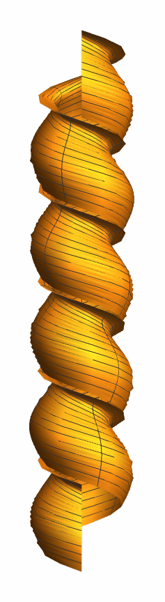
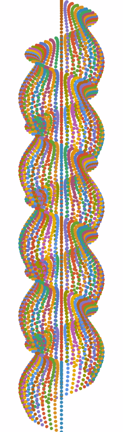
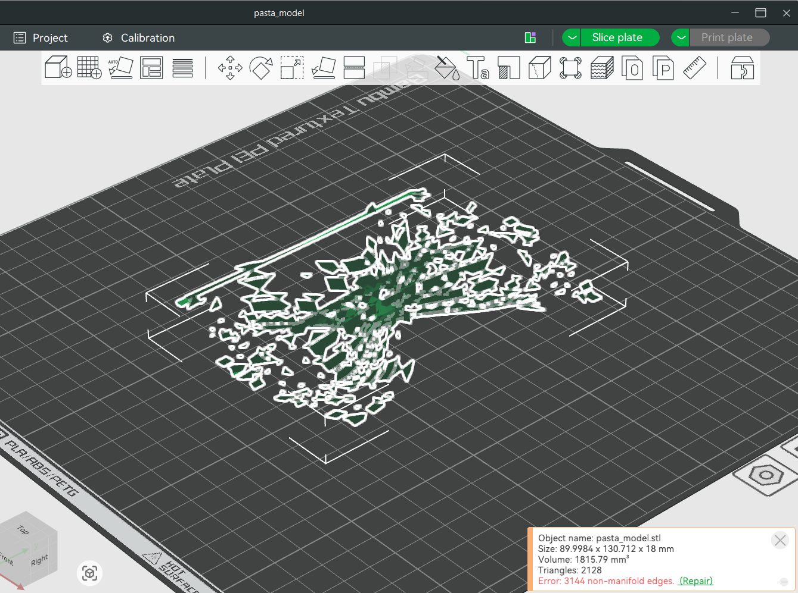

Pasta by Design
Pasta by Design by George Liaropoulous-Legendre is a pasta taxonomy. Ninety-two unique types of pasta are divided into families by their morphological features, described by parametric equations, and then illustrated with a photograph of the pasta as well as a 3D model. Each pasta shape also includes a description of how the pasta is best used in dishes, as well as cooking times.The book is a beautiful combination of culinary arts, and mathematics.
The pasta shape I first tried modeling on Wolfram Cloud using ParametricPlot3D was farfalle. My familiarity with Wolfram Cloud at this point was very basic, and so when the farfalle was missing one of the ruffled edges, I thought it was due to user error. Upon further analysis, I discovered that the parametric equations provided to model the farfalle referenced an equation, “iota”, which was not included. This misprint would probably not be missed by anyone, except a differential geometry student trying to use the equations to create a 3D model.
By deleting some of the equations provided, I discovered that the gamma equation was responsible for the ruffled edges that did appear in my 3D model. My plan of attack then became to translate, rotate, or reflect the gamma equation to create the iota equation. When this didn’t work, one of my group mates suggested that since the pasta shape is symmetric, it might be possible to reflect the half that was modeled correctly, but we were not sure how to do this.
I was determined to model this pasta so I visited Professor Kagey. He was able to determine that the iota equation needed to be reflected and moved up by 8.75 in order to complete the desired shape.
I was pleased to discover that none of the other pastas I modeled included misprints. In fact, farfalle has four equations that are referenced in the three parametric equations provided, as well as 3 conditional statements.
Buccoli
Modeling buccoli involved using only 3 parametric equations. The buccoli generated by the function ParametricPlot3D displayed some issues. This pasta shape didn’t look as smooth as the photographed buccoli. This is because the parametric model in the book is drawn by discrete units, while ParametricPlot3D uses continuous units. Creating another parametric plot using List Points generated a better model.


Encouraged by my success with modeling buccoli, I moved on to modeling giglio ondulato, farfalloni, cresti di gallo, galletti, cappelletti, fagottini, and quadrefiore. The plots generated using ParametricEquation3D generated smooth models that made me confident that I could 3D print some of them.
3D Printing
My goal was to use the 3D printers located in Maker Studio in the Cal Poly Pomona Library. My first visit to Maker Studio was not very successful. My STL file for farfalle generated a model that was not continuous and therefore not a good candidate for 3-Dprinting. My model was identified as having 3,144 non-manifold edges, which are holes or gaps on the surface of the model, or a surface with walls of zero-thickness.This was a problem that I was to encounter as I modeled other pastas.

In order to make a model that could be 3D printed I determined that I needed to modify my ParametricEquation3D function with the following functions:
PlotPoints: This helped speed up calculations and avoided timeouts. For some models, like farfalle, 50 plot points were sufficient, while for galletti it was necessary to have 200 plot points to render the crenallated top correctly.
PlotStyle or PlotTheme: These function made my points more pronounced. For some models, having "Thick" gave me the desired result while other models worked best with Thickness[] set to a number that gave me a 3D shape without distortion.
Extrusion: This function took the surface created by our parametric equations and gave it volume by creating a normal vector to the surface. The length of this normal vector can be modified and was different for each of my models.
The Extrusion function was really what brought it all together. It gave the parametric surface the volume necessary for 3D printing. For each pasta, the length of the normal vector varied due to the fact that some lengths distorted the pasta shapes. In order to keep the pasta shape, it is necessary to play around with the values used for each of these three functions.
With my parametric plots thus modified, I was able to 3D print three different pastas. The first pasta I printed, was giglio ondulato. This pasta has a helicoidal longitudinal profile with a hollow cross-section and wavy edges. This pasta was ready in about 20 minutes. I was happy with the result and thought of it as a "test run" as I worked on getting my other pastas and their corresponding equations modified for 3D Printing.
The second pasta I 3D printed was cresti di galli, which means "rooster's crest" in Italian. This is a pasta with a bent-longitudinal profile, hollow cross section and a smooth crest. When I uploaded the STL file of this pasta to Bambu Studio, it identified some non-manifold edges. I was advised that these issues might lead to a failed print. Bambu Studio is able to fix some issues with non-manifold edges, though it can take some time for the software to work. When Bambu Studio presented the "fixed model", it was no longer hollow. I was disappointed that this prominent feature of this pasta was gone, but decided to go ahead with the print. This took about 3 hours.
The final pasta I printed was farfalle. I really wanted to print this pasta since I had already spent so much time working to find the missing equation. Furthermore, I had added other functions to create a 3D surface from the surface given by the parametric equations. Yet the model was still not a candidate for printing. The main issue was that when the STL file opened in Bamboo Studio, the farfalle was composed of about nine different pieces. It appears that all of the equations that were necessary to create the farfalle surface also created boundaries in the surface. Ultimately, I modified the equations by trial and error until I got an almost solid piece that was eligible for 3D printing. Due to the size and complexity of this piece, it took about 5 hours.
Overall, I am happy that after so much work, I have three physical objects to show. I gained some familiarity with Mathematica and its capabilities, as well as familiarity with the rules and procedures of the Maker Studio.